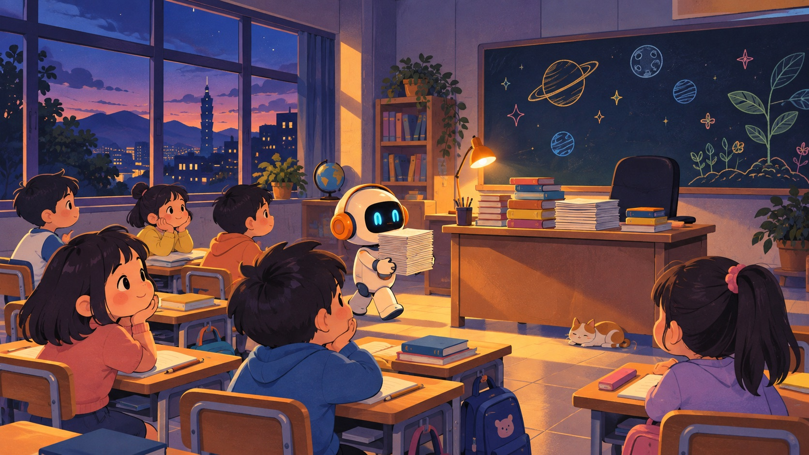
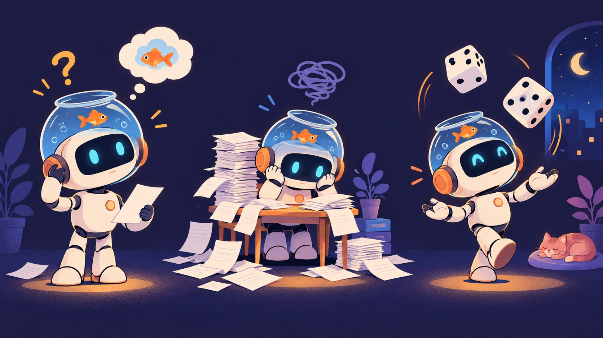
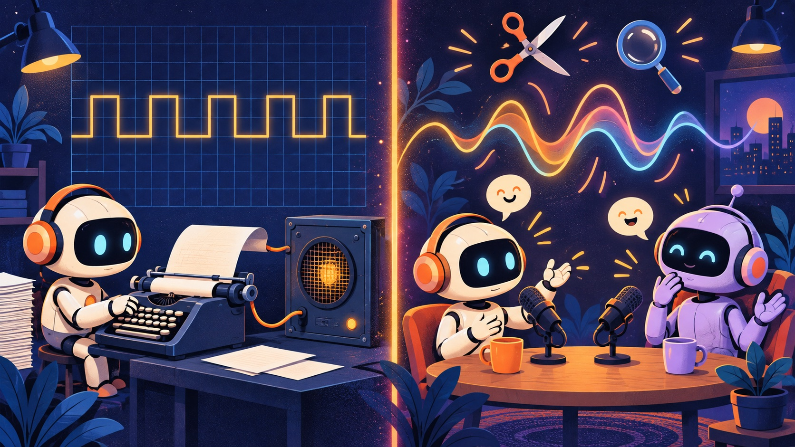
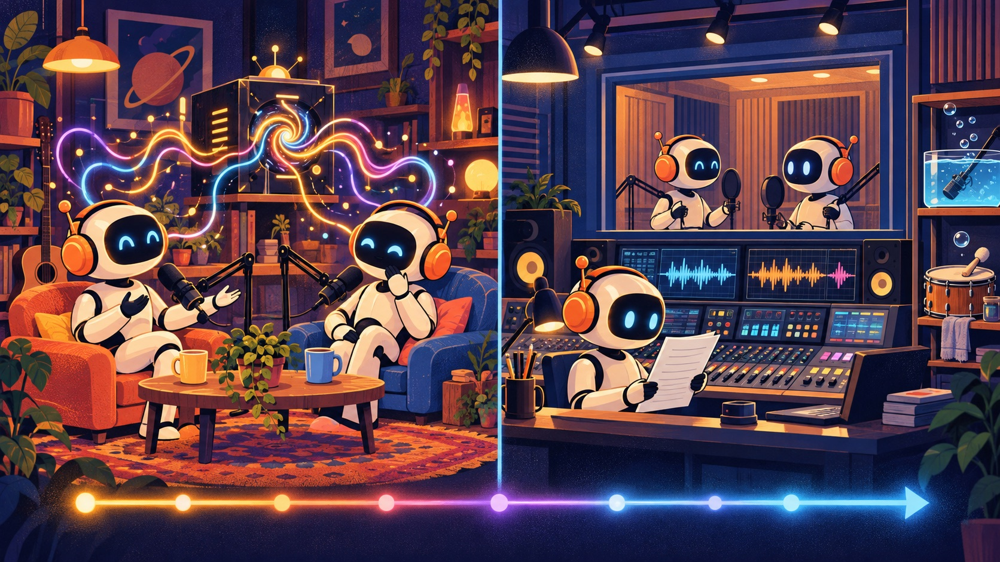

KidSciCast AI
一鍵生成？ 一集兒童科普 Podcast 是怎麼煮出來的Prompt 到 Graph 的五環工程
Kyle Huang, Ph.D.
《科學好好聽》創辦人 ｜ 聯發科技 資深技術經理
開場自我介紹。先不要講技術，直接說：今天要講一個 AI 說錯話的故事，還有我們怎麼把它變成一套正規工程。鍵盤：→ 下一步、空白鍵播放音檔、N 開關講稿、F 全螢幕。
背景與動機 [2]
為什麼要做《科學好好聽》

老師補不滿
614 個代理教師缺額，開學前仍待聘
國小 211、國中 403；自然、數學、資訊 老師特別難補
6,365 位受訪教師中，81% 說校園制度讓他們更不想繼續教
🔭
科學需要好答案
孩子每天都在問「為什麼」
有聲教材良莠不齊 ，口音也不是我們習慣的
每個為什麼，都值得一個查核過、在地口吻 的答案；做一次，就能給很多家庭反覆聽
第一位聽眾
我 10 歲的兒子
熱愛科學，卻總是靜不下來看書 ，那就用聽的
不只他：Apple Podcasts 最新 50 則評論裡，7 則說反覆收聽、6 則說孩子或全家一起聽
資料：教育部國教署（2026/8/25 師資整備）；立法院研析〈強化 STEAM 教育師資培育相關問題研析〉（2025）；全教總問卷（2025/5/1–7）；Apple Podcasts 台灣評論（2026/1–9）
先講為什麼做，再講怎麼做。我家有個十歲的兒子，熱愛科學，卻總是靜不下來看書。我想給他最好的科學啟蒙，可是市面上的有聲教材不是良莠不齊，就是口音不是我們習慣的。我常想：能不能有一個真正屬於台灣孩子、在地口吻、內容經得起推敲的科學頻道？放大來看，老師也補不滿：教育部在 115 學年開學前公布，國小還有 211、國中 403 個代理教師缺額待聘；開學後各校還在一招一招地招，有的甄選無人報名。立法院的研析特別點出自然、數學、資訊老師難補。全教總的自願線上問卷有 6,365 位老師回答，八成說校事會議這類制度讓他們更不想繼續教，這是意願，不是實際離職人數。這是動機，不是說一個 Podcast 能解決師資問題。我是忙碌的工程師，所以讓 AI 分擔錄製的時間；但每一集都要先過我這關才放給孩子聽，後面講的工程，就是這一關怎麼做。想做是一回事，我有沒有時間做，是下一頁。評論裡也看得到別的家庭把它變成日常；這 50 則是最新評論的樣本，沒有第二位編碼者。
背景與動機 · 為什麼是 AI Podcast
我只有零碎的時間，AI 給了我一根槓桿
我的一天・24 小時 工作 接送・吃飯・洗澡 睡覺 零碎 剩下的，只有這一小塊 想替孩子做優質的科學廣播，卻沒有時間，也沒有心力。 2025/5/1 我做出第一集 NotebookLM 的語音摘要，剛開始會說繁體中文（Google 2025/4/29 發布） AI 零碎時間 影響力 352 集 130 萬+ 次播放 我能投入的 ← AI 槓桿出來的 人家說 AI 會放大你本來的能力。我做到的是：用零碎的時間，槓桿出影響力 。
想做是一回事，有沒有時間是另一回事。我的一天，光是工作就佔掉一大半，再加上接送、吃飯、洗澡、睡覺，剩下的只有一小塊零碎時間。要靠自己錄出優質的科學廣播，實在沒有心力。轉折點是 NotebookLM 的語音摘要開始支援繁體中文：Google 在 2025 年 4 月 29 日發布，我在 5 月 1 日做出第一集。從那天起，零碎的時間也做得出節目。人家說 AI 是放大你本身的能力，我的體會是：AI 是支點，我投入的是零碎時間，槓桿出來的是三百多集、一百三十萬次以上的播放。上面那條時間長條是示意比例，不是實際工時統計；集數和播放數是後台數字的自行加總。聽到這裡，很多人的第一個反應是：那不就是按一個鍵嗎？
很多人以為
AI Podcast按一個鍵
又快、又簡單、又廉價。
一集《科學好好聽》實際要走過的路：
按下生成鍵，只是其中一格 。
NotebookLM 的確可以一鍵生成音檔。但一集能放心給孩子聽的節目，要走過十個步驟，其中好幾步一定要人親自做：選題、決定查核疑點怎麼改、15–20 分鐘的人耳審核、修音。
直接按空白鍵播放。第 5.8 秒會跳出大便符號。這是 NotebookLM 生成、準備上架的節目片段。
發生了什麼事
素材是對的，黑盒子說出來的不對
我們給 NotebookLM 的素材
水庫裡儲存的是液態的水
NotebookLM 說出來的
水庫不是應該裝滿了液態的屎 嗎？
NotebookLM 不是照稿念的 TTS，對話是它自己生成的，一整套工程 。
重點：這不是「稿子對、念錯」。NotebookLM 是黑盒子，素材進去、整段對話出來，中間每個字都是它生成的。所以錯誤只能在出來之後抓、之後修。
今天的主張
一鍵生成的是音檔 ，節目
今天帶大家潛到水面下，一層一層看：
▸ 五環理論：用來定位問題的放大鏡
▸ Auto 模式：NotebookLM 的自主性與代價
▸ Pro 模式：真正的 AI Harness，沿著文字、聲音、把關三條線打開五環
▸ 成本，以及帶走的三件事
這是全場的主張，也是地圖。結尾會再回到這座冰山，把水面下的東西一項一項數出來。
第一幕 · 為什麼不能直接用現成流程
繁體中文不只是換一個語言標籤
直接套用英文或簡中的 AI 流程，會多出四種工作
字形
发 → 發／髮
簡轉繁是一對多，「頭发」要變「頭髮」，不是「頭發」
用語
激光 → 雷射
科學名詞要用臺灣課本的說法
讀音
企業 qì
臺灣華語和大陸普通話的讀音不同，合成語音常常念錯
兒童理解
寫的 ≠ 聽的
書面說明要改成小朋友聽得懂的對話，而且只能用耳朵聽
這是論文的核心要求之一：繁中是系統需求，不是翻譯後處理。「垃圾」在臺灣日常常念 lè sè，教育部字典兩種都收；重點是合成語音的選擇要符合我們選定的參考標準。
第一幕 · 節目規模 [2]
2025 年 5 月上線，到 2026 年 11 月
130萬 +
次播放SoundOn＋Firstory 後台合計
NT$ 4,000
每月工具費（上下）審核約 15–20 分鐘／集
製作 352 和上架 232 不一樣，有些做了沒上。130 萬是兩個託管平台的播放次數加總。每月工具費大約台幣四千元上下。15–20 分鐘是審核階段的時間。
第二幕 · 五環理論速成 [1]
AI 是一位天才實習生，但有三個毛病

🐟 金魚記憶 Stateless 每次呼叫都忘光，要記得的東西得每次重新給它
🗂 桌子很小 Bounded 一次能看的內容有限，放什麼上桌是個選擇
🎲 愛擲骰子 Stochastic 同樣的問題，每次答案可能不一樣
五環理論的出發點：底層模型有三個性質，沒有狀態、容量有限、輸出隨機。每一環都是為了補償這三件事。
第二幕 · 五環全景 [1]
五環：一層包一層的 AI 工程
⑤ Graph 一次圖執行 ④ Loop 一次執行 ③ Harness 一趟 ② Context 一個視窗 ① Prompt 一次輸入
要 AI 做什麼？
把角色、指示、範例、格式，組成一個輸入
🍽 寫好食譜
讓它看哪些資料？
在預算內挑選、壓縮、丟棄 ：決定什麼上桌
🍽 只把要用的食材放上桌
動手做，做對了嗎？
收集 → 動手 → 驗收 ：模型第一次動手、第一次被獨立判定
🍽 開火煮，再試一口味道
沒過就重來，何時停？
一趟接一趟，事先定好成功條件與煞車
🍽 不好吃就調整再煮，最多三次
誰做哪一段，誰簽核？
很多節點分工、共享狀態 ，放進審核與人工核准
🍽 整間廚房分工，主廚出菜前把關
內兩環是 Harness 要收集的材料；外兩環決定它跑幾次、怎麼協調、誰來核准 。
這是整個理論的全景。五環的名字來自業界的寫作，論文的貢獻是用「工作單位」把它們定義清楚：一次輸入、一個視窗、一趟、一次執行、一次圖執行。每一環也可以想成做事時要回答的一個問題：要 AI 做什麼、讓它看哪些資料、動手做對了沒、沒過怎麼重來與何時停、誰做哪段誰簽核。用煮菜來想：寫食譜、備料、開火試味道、調整再煮、整間廚房分工。中間那一環 harness 畫得最粗，因為論文以它為中心：內兩環是它要收集的東西，外兩環決定它跑幾次、怎麼協調和核准。這是「組件」關係，內環在外環裡面會跑很多次；圓的大小只代表誰包誰。節目裡每一環怎麼做，下一頁對照。
第二幕 · 五層各自的回頭路
每一層都有自己的回頭路，也都把上一層包進來
① Prompt 訊息 單位：一次輸入 材料 角色・指示・範例・格式 組成一個輸入 模型 回應 ↺ 回應不好：改最弱的那一樣材料 ② Context 記憶 單位：視窗裡留什麼 材料 問題・文件・記憶・歷史・工具輸出 挑選・壓縮・丟棄 視窗 模型 → 回應 ↺ 這一步的輸出，變成下一步的材料 ③ Harness 機器 單位：一趟 ① ② 收集 模型 動手 工具・子代理 驗收 通過才交出去 ↺ 沒通過：重試＝重新收集，失敗當成新證據 ④ Loop 系統 單位：一次執行 目標＋成功條件 ③ 一趟 Harness 煞車 次數上限・沒進展・預算時間・完成檢查 最終結果 ↺ 還沒完成：把結果加進材料，再跑一趟 ⑤ Graph 拓樸 單位：一次圖執行 目標＋分工圖 分派？ ④ 節點 代理・工具・人工核准 審核 換一個模型、乾淨的視窗 ↺ 審核退回：重新分派 模型是大家都買得到的零件；包在它外面的一圈又一圈，才是工程 。
圖改繪自 DailyDoseofDS.com〈Prompt / Context / Harness / Loop / Graph Engineering〉
上一頁講每一環是什麼，這一頁講每一環出錯時往哪裡回頭。由上往下看：Prompt 的回頭路最短，回應不好就改最弱的那一樣材料。Context 的回頭路是把這一步的輸出放回材料，下一步才看得到。Harness 驗收沒過，不是叫模型再說一次，而是重新收集，把失敗當成新的證據。Loop 決定要不要再跑一趟，靠的是事先講好的成功條件和煞車。Graph 的審核節點換一個模型、用乾淨的視窗，退回時重新分派給對的節點。再看有顏色的小方塊：每一層都把上一層當成一個框包進來，收集裡面是 Prompt 和 Context，Loop 裡面是一趟 Harness，Graph 的節點就是一個個 Loop。下一頁把 Harness 這一趟放大來看。
第二幕 · 以 Harness 為中心 [1]
一趟 harness：收集、動手、驗收
⑤ Graph：很多個 loop 當節點，分工、共享狀態、審核、人工核准 ④ Loop：一趟接一趟，直到成功條件達成（完成），或煞車觸發（中止） ③ Harness：一趟 狀態 問題・文件・記憶 歷史・工具輸出 收集 gather ② 挑選上桌（預算內） ① 組裝成一個輸入 模型 一次呼叫 動手 act 工具・子代理 ⚠ 文字在這裡變成行動 驗收 verify 判定＋證據 通過？ 不通過：重試＝重新收集，失敗變成下一趟的證據 通過：結果寫回狀態，交給 Loop 判斷要不要再跑一趟 在《科學好好聽》裡，五環各做什麼：
① Prompt
請 AI 當科普作家，寫成小學生聽得懂的稿
② Context
只放查核過的文章、主持人設定、讀音標注
③ Harness
AI 上網查證文章，疑點列成清單
④ Loop
聽到錯字就修，再聽一次；修太多就整集重做
這頁是論文的核心：一趟 harness 由三步組成，收集、動手、驗收。收集這一步裡面包著前兩環：先在預算內挑選要上桌的東西，再組裝成一個輸入。模型輸出之後，動手：呼叫工具或子代理。這裡是安全邊界真正被打破的地方，因為文字變成了行動。然後驗收，要回傳判定和證據。不通過就重試，但重試不是重擲骰子，而是重新收集：把失敗寫回桌上，下一趟才看得到。通過就寫回狀態，由外面的 Loop 決定要不要再跑；Loop 外面再包 Graph，負責分工、審核和人工核准。下面一排是《科學好好聽》裡五環各自對應的步驟：寫稿、餵查核過的素材、上網查證列疑點、聽到錯字修完再聽、人耳通過才產生衍生教材。後面講 Pro 模式時，會一直回到這張圖。
第二幕 · 套疊之後的三條工作假設 [1]
三條工作假設
外環：多了檢查點 內環：裂縫還在 加一個審稿節點去抓格式錯，不等於把指令寫清楚。換更大的鍋子，救不了壞掉的食材。
一次呼叫 × r 趟 × m 次 × f 節點 C ≈ f·m·r·c̄ 缺陷 δ → 約 f·m·r·δ 一個念錯的字，會被抄進測驗、詞彙卡、短影片字幕。所以先往內修，省得最多。
① 一次輸入 ② 一個視窗 ③ 一趟 ④ 一次執行 ⑤ 一次圖執行 一句寫得好，不代表整集合格；整集合格，不代表查得到是誰批准的。
把五環當成組件關係之後，論文提出三條工作假設。它們是分析的指引，不是定理，論文也寫了各自在什麼條件下會失效。H1：外環能增加控制面，但修不好內環的缺陷。例外是外環其實在重寫內環的產物，那就算是內環的工程。H2：內環缺陷會在外面每一個工作單位重複出現。注意是重複，不是放大。乘數來自成本模型：一次圖執行的成本大約是節點數乘迭代數乘每次迭代的趟數，再乘每次呼叫的成本；一個每次呼叫多花 δ 的缺陷，每次圖執行大約多花 f·m·r·δ。這個近似假設各因子獨立。如果有驗收把有缺陷的結果都擋下來，缺陷不會往外傳，但產生它的成本還是一再重複。H3：每一環都需要和工作單位相符的評估工具。對我們特別重要的是 H2：審核要放在衍生教材產生之前。
第三幕 · Auto 模式 [2]
Auto 模式的主線：六個步驟
2 ③
查核換另一家模型＋網路檢索檢查正確性，列出疑點清單
4 ① ②
準備素材產生給 NotebookLM 的 prompt：主持人設定＋調整過的素材
5 黑盒
NotebookLM生成兩位主持人的自然對話音檔
6 ④ ⑤
人耳＋音訊剪接AI 轉錄檢查＋人工聆聽，發現錯誤就修音，通過才做教材
這是製作人描述的實際主線。右上角標的是這一步主要落在哪一環。注意第 5 步是黑盒：我們把最關鍵的聲音生成交給 NotebookLM，所以第 6 步的修音和把關特別重。
Auto 模式 · 一個關鍵的設計決策
為什麼不自己寫逐字稿再 TTS？

A 逐字稿＋TTS B NotebookLM 自然度 念稿感 附和、搶話、停頓，孩子聽了停不下來 控制 每個字都可控 黑盒，每次結果不同 驚喜 只會照稿 會自己加梗 ，人想不到的效果出錯時 改字、重念一句 只能事後剪音訊
我們用控制權 換到了自然度和自主性 ，所以要在外圈補上修音和把關。
這是整個系統最重要的取捨。A 路線的控制在第一環；B 路線的聲音生成是黑盒，控制點被迫往外移到第四環修音、第五環人工閘門。這也是 H1：外環修不好內環，只是加控制點。
再聽一段 · 13 秒 · 善用它的自主性
這句素材裡沒有，是 NotebookLM 自己加的戲
講到動物叫聲為什麼這麼大，主持人突然搬出東北方言梗演起吵架：「你瞅啥？」（你看什麼？）「瞅你咋地！」（看你又怎樣！）
直接播放，最後兩秒是重點。「你瞅啥？瞅你咋地！」是中國東北的方言梗，模仿兩人在路上瞪眼挑釁準備吵架。主持人把動物大聲吼叫，比喻成人類互相嗆聲。這就是選 NotebookLM 的理由：它的自主性會創造出人類編劇想不到的效果。但同一份自主性，也會產生前面的「屎」。所以要靠人耳決定：哪些驚喜留下，哪些事故剪掉。
選擇的代價
控制點往外移
同一份自主性：驚喜 ，有時是事故
會自己加東北話梗的模型，也可能：
· 把水 念成屎 字詞錯
· 說出稿子裡沒有的內容 自由發揮
第一環管不到 → 控制只能放在 ④ 修音 和 ⑤ 人工閘門
這頁把前面的選擇和接下來的抓錯、修音接起來。難度比較高，正是因為要做音訊剪接，而不是改一行文字。
直接播放。約 12 秒處，主持人在講完很多人失去生命之後笑了出來，畫面會跳出笑臉。製作人的修法：把笑聲剪掉。
第三幕 · 抓錯是 hybrid 的 [2]
雙層防線：AI 和人耳，互相補對方的洞
AI 轉錄檢查 人耳審核 發布前檢查
數字說錯
屎→水（弭平）
專有名詞說錯
腦補的字
😂 笑聲（聽不見）
✋ ✋ ✋ ✋ ✋ AI 擋下：人可能聽漏的
人耳攔下：AI 漏掉的
AI 擋得住 對照文章找出說錯的數字、名詞、漏掉的關鍵句，人用耳朵聽很容易滑過去
瑞士起司模型：每一層防線都有洞，錯誤要剛好穿過每一層的洞才會發布出去。AI 轉錄後對照文章，適合抓數字和名詞說錯這類錯誤，人快速聆聽時容易漏掉（這是錯誤類型的說明，不是節目裡記錄到的具體事件）；但 AI 的洞剛好是弭平、腦補、聽不見這三種。所以兩層互補，人的審核時間省不掉。
第四幕 · Pro 模式 · 2026 年 10 月底起
升級到 Pro
因為 Gemini 3.8 Flash TTS

逐句導演
每一句都能帶自己的 style：情緒、節奏、重音
逐字照念
text 就是逐字稿，演法另外放，字終於管得住
雙人對話
一次請求兩位講者，還能搭腔重疊 |真的嗎？|
語音標籤
句子裡直接放 <laugh> <gasp> <sigh>
30 種聲線・130 多種語言。自然度稍遜 NotebookLM，但每個字、每句演法都變成可以檢查、重做、追溯的工程產物。
Auto 模式由黑盒子決定每個字。Gemini 3.8 Flash TTS 讓語音合成能照我們寫的劇本演出對話：逐字念 text，演法放在 speech_metadata 的 style，單次請求兩位講者，支援搭腔與語音標籤。功能依 Google 官方文件 ai.google.dev/gemini-api/docs/speech-generation。自然度要誠實講：NotebookLM 還是最自然。接下來先看全景，再沿著文字、聲音、把關三條線一路走，每一頁左上角標出它屬於哪一環。
③ Harness · 為什麼這樣升級
Pro 才是真正的 AI Harness
Auto 寫稿查核 素材 prompt NotebookLM 黑盒子 harness 碰不到這裡 AI 轉錄檢查 人耳＋剪接 Pro 劇本契約 切批 TTS ASR 對稿 音效組裝 人耳 錯了，只重做那一段 判準只有一題：出錯時，能不能只重做出錯的那一小塊？
驗收的粒度
Auto：整集聽完
重試的粒度
Auto：整集重新擲骰子
失敗的記憶
Auto：修在這一集的音檔上
Auto 模式也有 harness，寫稿、查核、人耳都在。但最關鍵的聲音生成在黑盒子裡，harness 包不到它：驗收只能等整集出來，重試等於重擲骰子，還要整集重審。Pro 把聲音生成包進來了。回到第 13 頁的定義：harness 是組裝輸入、動手、驗收、重試的機器。這四步要能作用在同一個單位上，才算閉環；Pro 的單位是一段語音。最重要的第三點：Auto 修一個念錯的字，修的是這一集；Pro 修一個口音錨點，修的是以後每一集。注意 harness 不等於全自動，人耳還是必經節點，而且自然度稍遜是我們付的代價。
Pro 模式 · 全景
三條線：文字、聲音、把關
文字 聲音 把關 原稿 寫作指示 查核疑點 撰稿 逐句劇本 七面向審稿 改到通過 定稿劇本 審稿紀錄 故事音效表 跟劇本一起寫 預檢 不呼叫 TTS 分段 TTS 內容定址快取 音效渲染＋定位 beat／overlay 人聲＋音效分軌 時間軸紀錄 ASR 對稿 逐段比對劇本 逐個量音量 每個音效 👂 人耳試聽 試聽頁 分軌平衡 人聲單獨平衡 成品 只重做那一段 重新合成那一段 文字線先把劇本寫到過審；聲音線把劇本和音效表一次組裝；把關線是機器量測加人耳。每個節點都產出一個有版本的檔案，所以錯在哪裡，就只重做那一段。人耳試聽沒過，有兩條回頭路：音效放錯，回到音效那一段重做；念錯字，回到分段 TTS，只重新合成那一段語音。粉紅實心的節點是人耳，它在流程裡是必經節點。接下來就照這三條線走：先文字線，再聲音線，最後把關線。
文字線 · ① Prompt ＋ ② Context
文字線：先寫對，再念對
寫對
劇本是一份契約
每一句只有三件事：誰說、怎麼說、說什麼 。
{ 誰說 "小博 ",
怎麼說 "臺灣腔・興奮的現場報導・重音放在漆黑無光 ",
說什麼 "這裡終年漆黑無光，只能靠探照燈照亮。" }
「說什麼」會被一字不差念出來，稿上不能有任何不打算念的字。A1 有 122 句，用了 121 種不同的演法。
念對
讀音和口音，要在生成前處理
語音模型念不好的字，先改寫成念得對的同音字：好奇 → 浩奇 、科學好好聽 → 科學豪好聽。
一句演法寫錯，主持人就變成北京播音腔。這種錯修在工具的預設，而不是只修這一集。
錯在文字線，聲音線就得整批重來。所以文字要先過關 。
文字線處理兩件事。第一，寫對：劇本每一句只有誰說、怎麼說、說什麼三個欄位，「說什麼」會被逐字念出來，所以稿子本身要乾淨。第二，念對：模型念不好的字，在生成前先改寫；口音也要在生成前就指定好。接下來兩頁各講一個真實例子：審稿怎麼擋錯，讀音怎麼修。
文字線 · ② Context · 把發音知識放進生成之前
讀音是一條可重複的代換管線
全域代換
好奇 → 浩奇
寫死在腳本，匯出時自動套用
本集代換
鱔 → 善
開工前必問；新字不得包含舊字，否則拒絕
命名避險
好好聽號 ✗
念不好的名字，一開始就換掉
事故：一句 prompt 帶來大陸腔
style 寫「捲舌音清楚到位」，好奇博士被推向北京播音腔；Gemini 盲測 4 次都判大陸口音
修在工具，不是修這一集
工具自動補口音錨點：style 沒有口音錨點就自動補上，所有流程的預設一起換
text 只放要念的字，代換由腳本在匯出時統一執行，次數記在審查報告。代換規則要可重複套用，所以新字不能包含舊字。口音事件的判斷來自模型盲測，最後版本由製作人親耳選定。這是第二環的症狀，修在第三環的工具預設。文字線到這裡結束，定稿劇本準備好了；接下來進入聲音線，先看一次合成請求長什麼樣。
聲音線 · ③ Harness · 一次合成請求
從劇本到聲音：一次合成請求長什麼樣
劇本 A1 共 122 句 每句＝講者＋style＋text 切成「批」 一批＝一次請求 送出的連續句子 一次請求的內容（簡化） 模型 gemini-3.8-flash-tts 輸出 WAV 聲音・每秒 24,000 個樣本 講者 小可 → 聲線 Leda · 小博 → 聲線 Puck 句子 小可 style 口音錨點＋好奇、問句上揚 text 那歪一邊，跟季節有什麼關係？ 小博 style 口音錨點＋一步步解釋；重音：北半球、夏天 text 當地球跑到軌道的某些位置……變成夏天！ 小可 style 口音錨點＋立刻接話 text 那跑到另一邊—— ……（同一批的其他句子） style 原文是英文，這裡翻成中文 Gemini 3.8 Flash TTS 語音服務 回應 一段 WAV 聲音 ＋用量（tokens） 所有批的聲音接起來 ＝ 一集的語音 （後面講怎麼接） 服務的硬限制 一次請求最多 2 位講者 一次請求就是一批句子 。每句帶著劇本契約的三個欄位：講者決定用哪個聲線，text 逐字念出，style 只管怎麼演。服務回傳一段聲音。
一集有一百多句，而服務一次最多兩位講者，所以要把劇本切成好幾批、每批一個請求，再把所有批的聲音接回一集。接下來的問題是：在哪裡切？
先把機制講清楚。劇本每一句有講者、style、text 三個欄位，就是文字線那一頁的劇本契約。送給 Gemini 3.8 TTS 的請求，內容是模型名稱、輸出格式、兩位講者各用哪個聲線，以及一串句子。服務照 text 逐字念、照 style 演，回傳一段 WAV 聲音和用量。中間這三句是 A1 的真實台詞，style 原文是英文，前面都有一段固定的口音錨點。因為一次最多兩位講者，一集一百多句又不能一次送，所以要切成批。
聲音線 · ③ Harness · 切批
一整集不能一次送：切在哪裡，決定自然不自然
劇本 122 句 → 切成好幾批 → 每批送一次 → 一段聲音 → 接回一集
上一頁說過：一集要切成好幾批 分別合成，再接回來。每批多長是取捨；真正的難題是切在哪裡 。
難在切點：同一批的句子一起合成，語氣能互相呼應；切到兩批，回答聽起來就像突然開了新話題。問句和回答、沒說完的話、短短的搭腔 ，都不能被切開。
38%
46 集、5,538 個句子之間的邊界，有 38% 不能切
小可 那歪一邊，跟季節有什麼關係？ ✗ 問句 → 回答 相鄰對 小博 當地球跑到軌道的某些位置，北半球比較傾向 太陽……天氣就變熱，變成夏天！ ✗ 下一句很短 接話 小可 那跑到另一邊—— ✗ 話沒說完 —— 被接走 小博 ——北半球接收到的陽光比較斜、比較少， 天氣就變冷，變成冬天。……剛好相反！ ✓ 可以切 前後各自完整 小可 我懂了！就像圍著火爐烤火…… A1〈浩奇號・地球〉第 89–93 句（節錄）
文獻：Sacks, Schegloff & Jefferson (1974), Language 50(4)；Schegloff & Sacks (1973), Semiotica 8(4)；Yngve (1970), CLS 6
上一頁講了為什麼要切，這頁講難在哪：切點會影響語氣。右邊是 A1 的五句真實台詞，只有最後一個地方可以切。會話分析把問與答叫做相鄰對，短短的回應叫搭腔，這些都不能拆開。我們在 46 集裡數過，大約四成的句間邊界都不能切。
聲音線 · ③ Harness · 接縫
接縫：讓兩批之間聽起來像換一口氣
兩批之間的接縫 批次 k 批次 k+1 30 補 120 ms 20 接縫 ≈ 170 ms 人類對話換人說話的間隙（Levinson & Torreira, 2015） -100 0 100 200 300 400 500 常見約 200 ms 我們 ≈ 170 多數落在 −100～500 ms（毫秒） 聲音檔 ＝ 檔頭 ＋ 樣本 ✗ 整個檔案直接相接 檔頭 樣本 檔頭 樣本 第二個檔頭被播成「喀」 ✓ 只取樣本，重寫一個檔頭 新檔頭 樣本 樣本 ✗ 格式不一致 24 kHz 的樣本被當成 48 kHz 播放 → 速度變兩倍、音高高一個八度 所以拼接前先確認：取樣率、位元深度、聲道都一致 每批的回應是一段 WAV，頭尾都帶一段長短不一的靜音。直接相接，接縫處的空白會忽長忽短。我們先修到只剩 20／30 毫秒，再統一補 120 毫秒：接縫約 170 毫秒，落在人類對話換人說話的常見範圍裡。
每個接點另做 5 毫秒的淡入淡出，避免波形突然斷掉產生「喀」聲。這些都是訊號層的小事，但聽眾一定聽得出來。
文獻：Stivers et al. (2009), PNAS 106(26)；Levinson & Torreira (2015), Frontiers in Psychology 6:731
左邊是接縫的時間設計。合成回來每一批頭尾都有長短不一的靜音，修掉之後補固定的 120 毫秒，加上保留的 20 和 30 毫秒，接縫大約 170 毫秒。心理語言學的研究發現，人類對話換人說話的間隙通常在 200 毫秒上下；Stivers 等人比較十種語言，都避免重疊、也避免長沉默。170 毫秒落在這個範圍裡，聽起來像換一口氣。右邊是聲音檔的結構：檔頭加樣本。直接把檔案接起來，第二個檔頭會被當成聲音播出。格式不一致更糟，24 kHz 被當 48 kHz 播，速度兩倍、音高高八度。
聲音線 · ⑤ Graph · 音效對時間
音效要對準時間：輪流，或同時
輪流 · beat 台詞 音效 台詞 對話停下來，讓音效完整播完，再接下一句 同時 · overlay 哇 — — 整 個 座 椅 都 在 抖 ！ 大 家 看 窗 外 機艙震動 音效壓在「那幾個字」上：得先知道那幾個字在第幾秒
beat ：位置在組裝時就決定了，不用猜。
overlay ：要從合成好的聲音裡，找出那幾個字在第幾秒。
難在中文：同音字、異體字太多。1,614 個對齊點裡，有 11% 辨識出來的字和劇本不一樣（牠→他、台→臺），念對了，寫法卻不同。
原則：對不上就停下來請人看，絕不猜一個秒數。 笑點蓋錯句子，孩子一定聽得出來。
46 集故事模式：531 個 beat、1,614 個 overlay
故事模式的音效有兩種。beat 是對話停下來讓音效播完，它的位置在組裝時就算好了。overlay 是壓在某幾個字上的短音效，要先知道那幾個字是第幾秒說的，這要從合成好的聲音裡推論。中文的同音字和異體字讓這件事變難：我們的資料裡有一成多辨識結果和劇本寫法不同。所以規則是對不上就停，不猜，寧可請人看一眼。
聲音線 · ③ Harness · 音效工具庫
3,977 個音效檔＋33 種合成音效
39.4 小時
50 個分類
4.6 GB
10–16 個 beat／15 分鐘
平均每 24 秒一個音效
動作擬音 876 翻日曆、剪刀、撕紙板、筆蓋
居家與廚房 529 翻炒、蓋鍋蓋、電風扇、開燈
人聲與活動 423 掌聲、哨子、刷牙、咳嗽
撞擊與兵器 415 打牆、重擊、中國的劍
城市與環境 400 機場車站、繁華街、空調
奇幻與科幻 330 光劍、魔術、宇宙人、機器人
交通工具 315 飛機、小船引擎、汽車
自然與動物 298 青蛙、蟬、海浪、小雨和雷
卡通與遊戲 282 場面轉換、鋼琴、發條
機械與警報 109 工具機械、警報鈴
卡通 12 咻 揮砍 啵 泡泡 彈簧 滑音哨 大口吞 閃光 鈴 答對 疑問 答錯
科技 11 斷電 充能 按鈕 喀嚓 嗶嗶 聲納 電擊 時鐘 火箭 蓄勢 時空扭曲
自然 10 心跳 蛇嘶 鱗片 低鳴 輕爆 大鼓 金屬鏘 刀鋒 冰塊 馬蹄
長條是錄音音效的 10 大類，每類右邊是真實的音效名稱。例如 A1 用到了噴嚏、毛巾摩擦、強風、駕駛艙按鈕、豎琴。合成音效用配方加參數產生，固定亂數種子，同樣規格永遠得到同樣的聲音。紅線：不暗示原稿沒有的事件、不放突發驚嚇。每個音效都要寫 reason，說明為什麼這裡需要它。
聲音線 · A/B 試聽 · A1「發射」那一拍
同一句台詞，兩版音效
快取讓這件事幾乎免費：台詞不動，只換音效，不再呼叫 TTS 。A1 從 v3 到 v4，12 個 beat 換了 9 個。
先播 v3，再播 v4。粉紅框是 beat 的位置，v3 長 2.6 秒，v4 長 3.0 秒。製作人定的原則是真實動作用錄音、卡通效果留合成，所以 v4 把火箭換成真實錄音。兩段都取自同一集第 52.6 秒起，從倒數開始。台詞那一段直接用快取，沒有重新合成。
Pro 模式 Demo · 48 秒 · A1〈浩奇號・地球〉
太陽打了一個大噴嚏
三個 beat 都是先寫進劇本 的：台詞把聲音引進來，聲音播完，下一句再接住它。
直接播放。這段是 A1 成品檔。小博喊往北極飛，太空船掠過；「大家看這裡」之後是極光的閃爍鈴音，小可才開口驚嘆；最後小博說太陽會打一個超級大噴嚏，就真的來一聲噴嚏，小可笑他在幫太陽配音。這個笑點是為了音效寫的，Auto 模式的對話不會停下來等音效，所以做不到。Auto 的東北話梗是黑盒子的驚喜，Pro 的噴嚏梗是我們設計出來的。
把關線 · ④ Loop · 逐個量音量
整體響度正確，不代表每個音效都對
0 -10 -20 -30 A1 的 42 個音效（dBFS）：圓點是最大聲的瞬間，線的下端是平均 beat overlay beat 上限 overlay 上限（要壓在人聲底下）
為什麼要量 ：整集平均剛好，裡面可能有一個音效太大聲嚇到小孩，另一個小到聽不見。
難在哪 ：整包一起做音量處理，音效相對人聲會漂移，實測多達 6 dB 。
所以 ：人聲和音效分開處理，每個音效逐一量；最後一定經過人耳試聽。
把關線的重點只有一句：整體對了不代表每個都對。右邊是 A1 實際量的 42 個音效，兩條虛線是我們給 beat 和 overlay 設的上限。整包一起做音量處理，音效會被壓縮器拉大或壓小，c35 實測相對人聲漂移 −4.5 到 +6.1 dB，所以要分軌。
Pro 模式 · 用五環比較兩種模式 [2]
Auto 模式控制在外圈，Pro 模式控制回到內圈
環 Auto 模式 NotebookLM Pro 模式 Gemini 3.8 TTS ① Prompt 只能給素材和人設 每句台詞、演法都由我們寫 ② Context 發音標注只是建議 讀音代換寫進台詞，口音錨點每句都帶 ③ Harness ★ 聲音生成是黑盒子 分段合成、快取、請求可預覽 ④ Loop 事後剪接修音 ASR 逐段對稿，只重錄那一段 ⑤ Graph 人耳審核後才做教材 劇本＋音效表一起寫，試聽頁收回饋
選工具，其實是在選：控制要放在哪一環 。人耳審核在兩種模式都省不掉。
這頁是全場的收束：五環不是只能拿來分析錯誤，也能拿來比較工具。Auto 模式用自然度換走了內圈的控制，只好在外圈補；Pro 模式把控制拿回內圈，但自然度稍遜。
收尾 · 一集要花多少錢 [2]
工具費攤到每集之後，人的時間 仍是最大一塊
Auto 模式 Pro 模式 NotebookLM Gemini 3.8 TTS $8.17 $10.14 $1.50 人耳審核 $6.67 工具費 $3.25 人耳審核 $6.67 TTS $0.22
$0.22
Pro 模式一集 16 分鐘的 TTS 費用：輸入 3,478＋輸出 24,065 tokens
$0.00225
重錄 10 秒的官方換算費用。念錯只重錄那一段
$1.50／$3.25
工具費攤到每集：Auto 每月 ≤ US$30；Pro 每集約 US$3.25
假設：每月 20 集、時薪 US$20、審核 20 分鐘，不含修音；TTS 依 Google 官方 2026 牌價（輸入 $0.50、輸出 $9.00／百萬 tokens）與一集 960 秒實際用量
工具費分開算：Auto 模式沿用每月 30 美元以內，攤到每集 1.50 美元；Pro 模式依製作人估計，工具費攤到每集約 3.25 美元，再加上 TTS 約 0.22 美元，2027 年起牌價加倍，約 0.43 美元。所以 Pro 一集約 10.14 美元，比 Auto 的 8.17 美元高一些，但最大的一塊還是人耳審核。修音的差別沒有算進來：Auto 模式念錯要人工剪接；Pro 模式只要重錄那一段，10 秒約 0.00225 美元，再聽一次確認。兩種模式的修音時間都還沒有完整量測。
帶走三句話
1. AI 沒有讓人消失，人負責最貴的判斷
2. 真正的 AI Harness：出錯時，只重做那一小塊
3. 品質的上限，取決於驗收做得多好
Q & A · 下一集，你想聽什麼？
第一句：避免 ring inflation，不要一出問題就加 agent。第二句：外圈越多，越需要說清楚誰批准、誰負責。第三句：論文第 IX 章的主線。